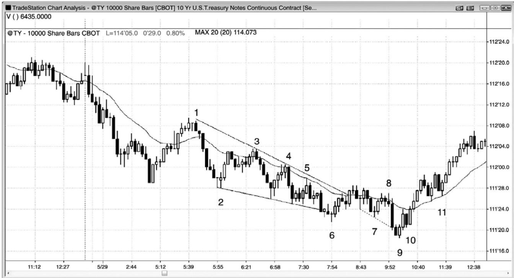
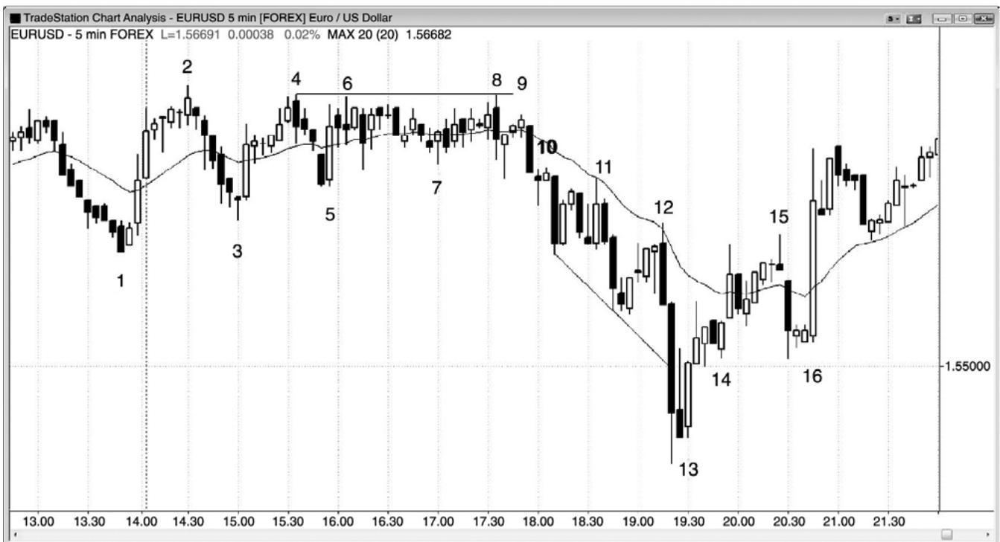
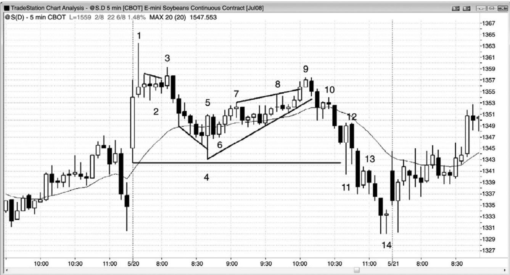
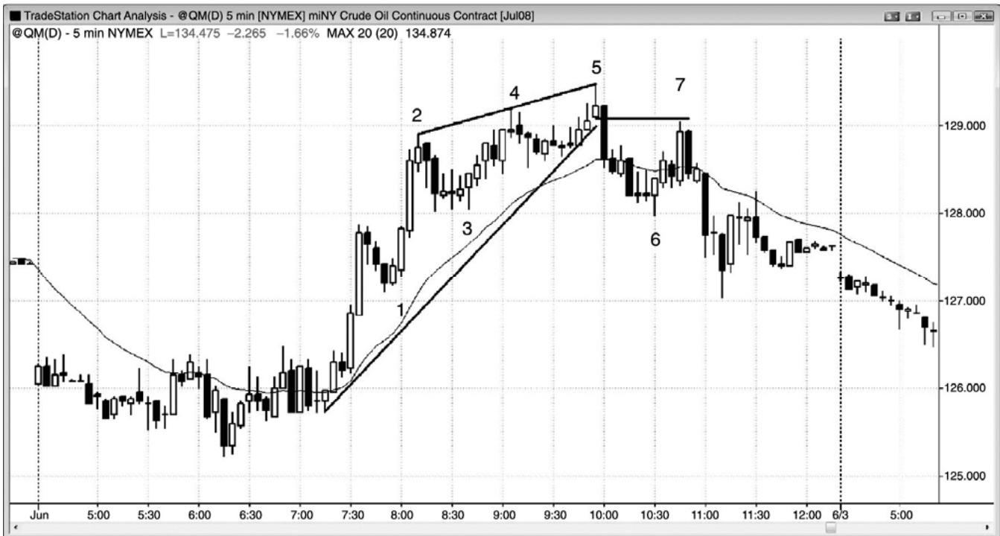
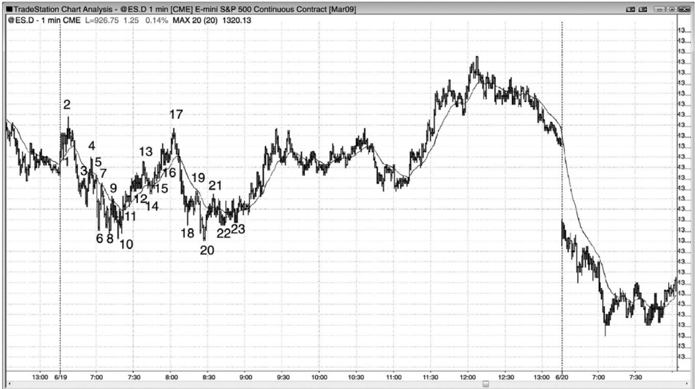
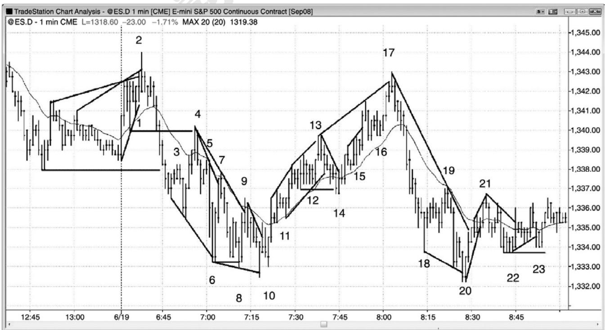

第21章 详细的日内交易示例¶
第 21 章 详细的日内交易示例
这一章给出了很多合理的日内交易的详细示例，包括三本书中所有的基本思想。

图 21.1 是 10 年期美国国库中期国库券图表，每一棒代表 10,000 股。一旦一棒的成交量越过 10,000 张合约，它就收盘。每一棒中，由于最后一笔交易的合约数量可能为任意数字，所以大部分棒线的合约数量多于 10,000 张，而不是刚好是 10,000 张。由于棒线不是以时间为基础的，所以有些棒线可能只花几秒便会形成，而有些棒线可能要花 10 几分钟才能超过10,000 张合约。
棒 3、4 和 5 是空头趋势中测试均线时的做空架构。
棒 6 是一个二次入场空头趋势通道线过冲和向上反转，但是信号棒较弱（一个小十字星）。然而，从棒6楔形反转开始的反弹突破了趋势线，测试低点时形成一个做多架构。
棒 7 是一个两条腿更高低点，但它是一个十字星，是双向交易而非强势买进的象征，而且它出现在两条强空头趋势棒之后。虽然这是一个最低限度上可以接受的买进架构，但是最好等待较强的信号。如果你选择这个架构，那么就会在棒 8 下方离场，因为那是均线处的一个低点2做空架构，而且它有一个空头实体。那是一个强卖出信号，逆势交易者们应该离场，甚至要在空头二次尝试恢复趋势时反转头寸。试图在空头趋势中买进的逆势交易者们，在低点 2 信号处总应离场，除非趋势已经明确地反转，低点 2 架构还可能失败。棒 11 便是一个这样的例子。
棒 9 是一个更低低点重要趋势反转，是突破结束于棒 6 的楔形底后的突破回撤，也是一个预期出现强趋势反转的买进架构。它也是一个空头趋势通道过冲和反转，它是一条多头反转棒和一个双棒反转。从棒 6 到棒 9 的交易区间是一条紧凑的通道，成为空头趋势中的最终旗形。另外，它是跌至棒 2 的下跌尖峰之后的较大楔形通道之后的反转。尖峰和通道空头趋势中的通道常常以三推结束，这里便是如此（棒2、6和9）。
棒10向上突破一条内包棒，那条内包棒标志着第一波微型回撤（空头趋势棒）的结束，所以交易者们可能会在它的上方做多，或者从棒 9 上方开始加大他们的多头头寸。在尖峰和通道空头趋势（棒 2 使尖峰结束）以及三次下推（棒 2、6 和 9 是下推终点）之后，很可能形成延长的两条腿上涨，所以棒 10 暂停很可能只是第一条上涨腿的一部分，而不是第二条上涨腿的起点。在一条持续了 20 棒或 30 棒的空头通道之后，调整很可能至少包含一半的棒线，这是一条一般性规则。如果调整太小，那么空头在做空时会有所犹豫，而多头则继续买进，因为他们认为调整需要更多棒线才能清晰。双方都需要看到市场是否正在反转，从棒 10 开始的四棒多头上涨尖峰是反转正在进行的很好证明。空头尖峰和通道形态很可能回溯到通道起点棒 3 附近，果然如此。多头常常在那里获利了结。在这一区域，有些多头开始加仓，一旦市场返回他们的第一个入场点，他们常常会退出整个头寸。他们把最初在棒 2 和棒 3 之间建立的多头头寸了结，差不多是盈亏平衡，而所有在较低价位入场的交易赚到了利润。空头常常会再次积极做空，因为他们知道市场在当天早些时候从这一区域开始下跌，可能会从那里再次下跌。当天结束，没有足够的时间让那些空头获利，所以他们选择不在收盘前做空。
P221
棒 11 是一个高点 2 买进架构（高点 1 在两棒之前），出现在一个强多头尖峰之后。交易者们正预期至少出现两条上涨腿，与尖峰高度相比，这波两条腿回撤太小，所以第一条上涨腿可能没有结束。交易者们认为可能发生如下三种情况中的一种：回撤非常小，所以它只是一条复杂的第一条腿的一部分；第一条腿结束，第二条上涨腿正在开始；或者第一条腿结束，将出现更深的回撤，然后向上运动超越这条腿的顶部。这三种可能都意味着市场会继续走高，所以这是一个很棒的买进机会。是的，棒11是一个双棒反转顶的入场棒，它是空头趋势中一个均线缺口棒做空架构的二次入场。这可能会引起对空头低点的测试。然而，在大部分交易者思想当中，上涨尖峰已经令市场翻转为总在场内多头，所以大幅下跌的可能性非常之小。
大部分交易者认为反转比做空架构强得多。

如图 21.2 所示，在一个新高之后，5 分钟欧元兑美元（外汇）在棒 2 向下反转。这条多头腿拥有非常强的动能，连续 8 棒没有空头趋势棒，所以在跌破多头尖峰底部棒 1 之前，任何回撤都将测试棒 2 高点的可能性很高。棒 3 是一条均线缺口棒，也是对反弹起点棒 1 的突破测试。它与前面两棒构成一个微型楔形，应该至少会引起一波反弹。它也是强多头尖峰之后的一个楔形多头旗形。第一条下跌腿是棒 2 之前的第三棒，第二次下推是棒 2 之后第二棒，第三次下推是棒 3。
市场形成一个三角形，结果成为一段紧凑的交易区间。三角形至少包含一个方向上的三推，棒 2、4 与 6 或 8 形成三次上推，而棒 1 或 3 与棒 5 和 7 形成三次下推。当存在多种可能时，有些交易者会认为某一种更重要，而另外一些交易者则认为其他的可能更重要。每当出现混淆时，市场是处于交易区间内，所以产处于突破模式，大部分交易者应该等待突破，而不是在紧凑的交易区间内交易。
棒 8 是一次失败的向上突破尝试（比棒 4 高点低了 1 个跳动），在一条空头外包棒内反转穿过了区间底部。它与棒4或棒6形成一个双重顶空头旗形。
棒 9 是一条突破回撤小型棒，位于那条外包棒的中点之上，提供了一个低风险做空机会。
棒10是又一个突破回撤做空架构。
棒 11 是均线处一个低点 2 做空架构，信号棒是一条空头棒，是第二次向下突破尖峰低点棒 3。
棒 12 是均线处的又一个低点 2 做空架构。一定要不断设置你的订单。在看到多头十字星更高低点之后，空头可能变得自鸣得意，但是你仍然需要考虑市场是处于空头波段之中，如果它跌破这一棒，那么将形成一个低点 2 做空架构。
P222
棒 13 是趋势通道线过冲和卖出高潮棒之后的一个看涨的 ii 架构。这是一个抛物线楔形底，意味着市场向着最后的低点架构，然后向上反转。从棒10开始出现三次下推，头两次下推（棒 10 和 11 之后的波段低点）形成的趋势线的斜率，比第二次和第三次下推（棒 11 后面的波段低点和棒 13 之前的最后低点）形成的趋势线的斜率要低。
市场已经趋势下跌了 20 棒左右，突然形成空头趋势中最大的一条空头趋势棒（棒 13 前面倒数第二棒）和最大的双棒空头尖峰。这个尖峰很有可能代表着耗尽，它可能是最后一批弱势多头离场，最后一批弱势空头做空。强势多头正在这里买进，会随着市场走低而加仓，而不是仓皇退出，强势多头只会在较大幅度的回撤之后做空。这使得市场很可能至少形成一波两条腿反弹，持续 10 棒左右。强多头内包棒表明买家正在取得控制权，它是一条不错的信号棒。
棒 15 是三次上推，是第五均线缺口棒。从棒 13 开始的双棒多头尖峰是上涨尖峰。在向下调整之前，尖峰和楔形形态通常会再形成两次上推，比如这里。
棒 16 是一个更高低点做多 ii 架构，因为在趋势通道线过冲和离开棒 13 低点入场之后，交易者们正预期至少形成两条上涨腿。它与截止棒 15 的楔形上升通道的底部棒 14 形成一个双重底多头旗形。大型空头趋势棒将空头套入，把弱势多头套出。
图21.3 大豆在开盘时的买进高潮

如图 21.3 所示，大豆的 5 分钟图在开盘出现一波买进高潮，然后是一个小型的最终旗形，随后是一个楔形空头旗形和一个大型的第二条腿下跌。
棒 2 是一个十字星交易区间，出现在棒 1 上涨尖峰之后，所以是一个糟糕的买进架构。市场很有可能横盘，而不是下跌。激进型交易者们设定限价单在前一棒高点做空，在棒 3 入场，预期高点 1 失败。棒 3 是一个低点 2 做空架构，一个更低高点，一个最终旗形做空架构。在棒 1 买进高潮和一个可能的开盘反转和当日高点之后，交易者们正寻找更多的调整。
棒 4 过冲了一条空头趋势通道线，从一个与当天第一棒构成的双重底向上反转。这可能是当日低点。入场是在棒 6 ii 棒上方，它有一个多头收盘，而且收盘于均线上方。
棒 9 是一个更低高点楔形空头旗形，与棒 3 形成一个双重顶空头旗形。它是从低点棒 4开始的一波四条腿上涨运动，使得它成为一个低点 4 变种。市场可能从棒 1 开始形成一波大型的两条波下跌，交易者们会在棒 9 下方或它后面的空头棒下方做空。你能够看到随后一棒是一条大型空头趋势棒，表明很多交易者在棒 9 后面的空头棒下方做空。
棒 10 是趋势线突破后的一个突破回撤。
棒 11 在创出当日新低后成为一条巨大的多头反转棒，形成一个双棒反转。然而，棒 12未能向上趋势它。这使得棒 12 成为一条很棒的做空信号棒，因为在棒 11 及早入场的多头被套，会在空头趋势棒棒 12 下方离场。它也是一个突破回撤做空架构。棒 13 是突破回撤做空入场。

P223
如图 21.4 所示，原油的 5 分钟图形成一个楔形顶，然后一个更低高点。棒 1 是突破早期交易区间后的一个高点 1 突破回撤。它是一个双棒反转，是强双棒多头尖峰之后的第一次回撤。那个强双棒多头尖峰突破了一段交易区间，令市场翻转为总在场内多头。
虽然形成了带刺铁丝形态和第二波买进高潮，但是棒 3 是多头趋势棒上方一个不错的高点2做多架构，因为棒2所在顶部还没有强到表明空头正在控制市场。
棒 5 是一个楔形面，是棒 2 多头尖峰之后的通道的顶部。棒 2 之后，双向交易以突出的尾线、重叠的棒线、回撤和空头实体继续，所以测试通道低点棒3的几率很高。
截止棒 6 的下跌突破了趋势线，略微跌破了多头趋势的更高低点棒 3，表明强势空头出现。
棒 7 是对棒 5 信号棒低点的两条腿突破测试，是向下突破多头趋势线后的一个更低高点，所以可能是一个重要趋势反转，是一个双棒反转做空架构，是对向上刺穿均线的极力抗拒，也是一个楔形空头旗形。楔形空头旗形更低高点中的第一次上推，是棒 6 前面倒数第四棒那条小型多头棒，第二次上推是棒 6 后一棒。
图21.5 1分钟图上的刮头皮

图 21.5 是一张 1 分钟图，显示出头 90 分钟内的一些价格行为刮头皮。下一张图是这一时间段价格行为的特写。对于大部分交易者来说，足够快速地正确捕捉这些交易中的大部分基本上是不可能的，但是这张图表说明价格行为分析在 1 分钟这样短的时间框架上也是有效的。
P224

图 21.6 是 1 分钟电子迷你开盘 90 分钟的特写，突出显示了价格行为刮头皮架构。棒线编号与前一张图相同。
棒 1 是一个高点 2 做多（有两次下推）。
棒 2 是一个楔形做空和一个最终旗形。
棒 3 是空头尖峰之后的一个突破回撤做空和一个低点 1。
棒 4 是一个突破测试做空、一个更低高点、以及一个低点 2，其中棒 3 是低点 1。
棒 5 是一个更低高点和一个低点 2 做空，位于均线下方。
棒 6 是一个楔形做多、一个双棒反转、以及一个扩张三角形底。
棒 7 是一个失败的趋势线突破做空，并与棒 5 形成一个双重顶空头旗形。
棒 8 是一个两条腿更低低点，形成于棒 7 突破趋势线之后，是交易区间日中的一个更低低点。
棒10是一个楔形反转二次入场和一个更高低点。这个更高低点可能意味着多头趋势正在形成。
棒 11 是趋势线突破后的第一次回撤。它是一个高点 2 做多，高点 1 在两棒之前。
棒 12 是又一个多头高点 2。
棒 13 是一个楔形做空、一个最终旗形、一个可能的双重顶空头旗形（与棒 4 构成）。
棒14是一个失败的多头趋势线突破、对交易区间的一次失败的向下突破、一个双重底多头旗形、以及第二条上涨腿的可能的起点。
棒 15 是一个高点 2。一棒之前出现过一个多头旗形突破回撤入场。
棒 16 是多头趋势中的一个高点 2。
棒 17 是一个楔形，是对当日高点的失败的测试（一个双重顶），所以可能是一个更低高点。
棒 19 是均线处的一个空头低点 2、一个楔形空头旗形、一个五跳动失败（对于在棒 18买进的交易者们来说）、也是空头尖峰令市场翻转为总在场内空头后的第一次回撤。
棒 20 是趋势型交易区间日内向当日新低的两推（棒 18 是第一次）。尽管从高点棒 17 出现了一条强空头腿，但此时还不是一个空头日。它也是当日单跳动新低之后的向上反转（单跳动失败突破和双重底）。它也是一个双棒最终旗形突破后的一个楔形和双棒向上反转。
棒 21 是第二条上涨腿、一个楔形空头旗形（棒 20 前面的 ii 形成是第一次上推）、以及一个可能的双重顶空头旗形（与棒 19 形成）。
棒 22 是趋势线（棒 17 到棒 19 的趋势线）突破后向着一个更高低点的两条腿回撤，一个
双重底（棒10和棒20）回撤做多。
棒23是一个失败的趋势线突破和一个双重底（棒23比棒22高1个跳动）多头旗形。
P225